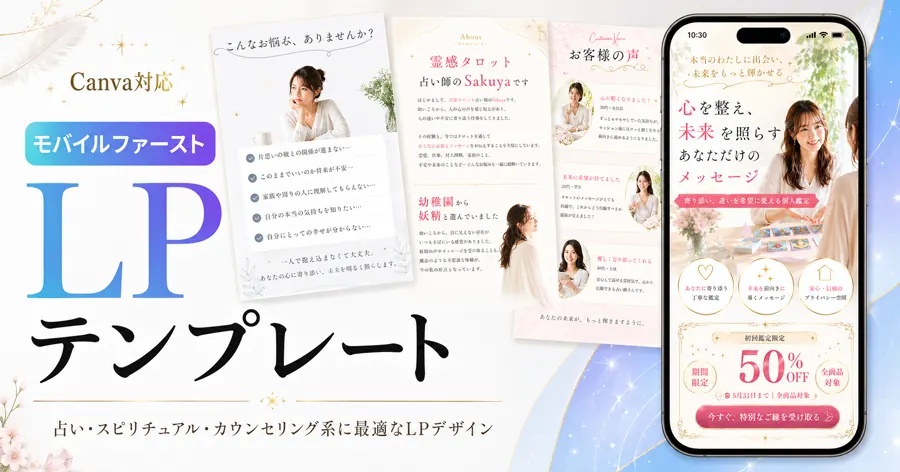
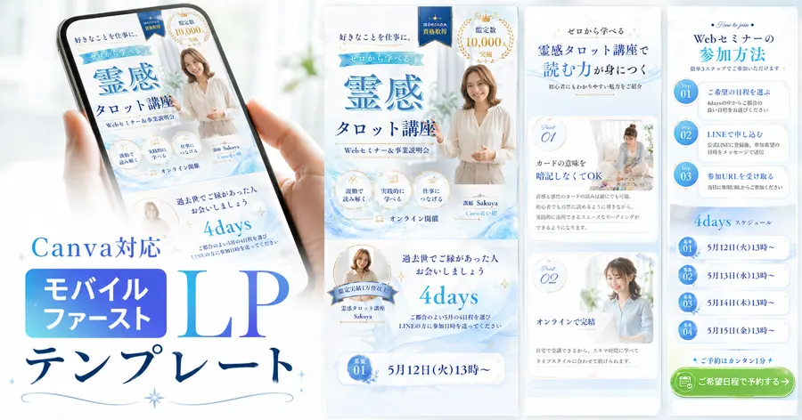
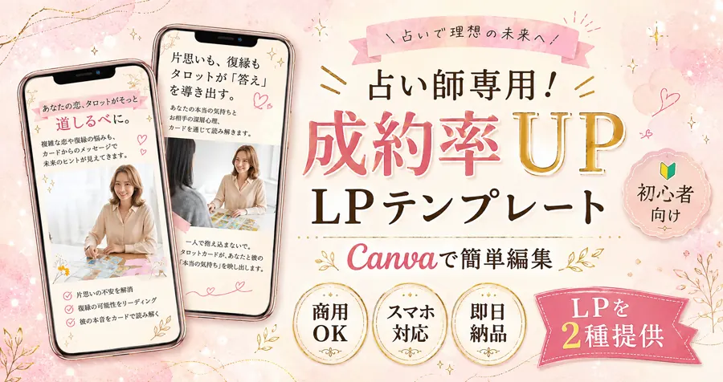
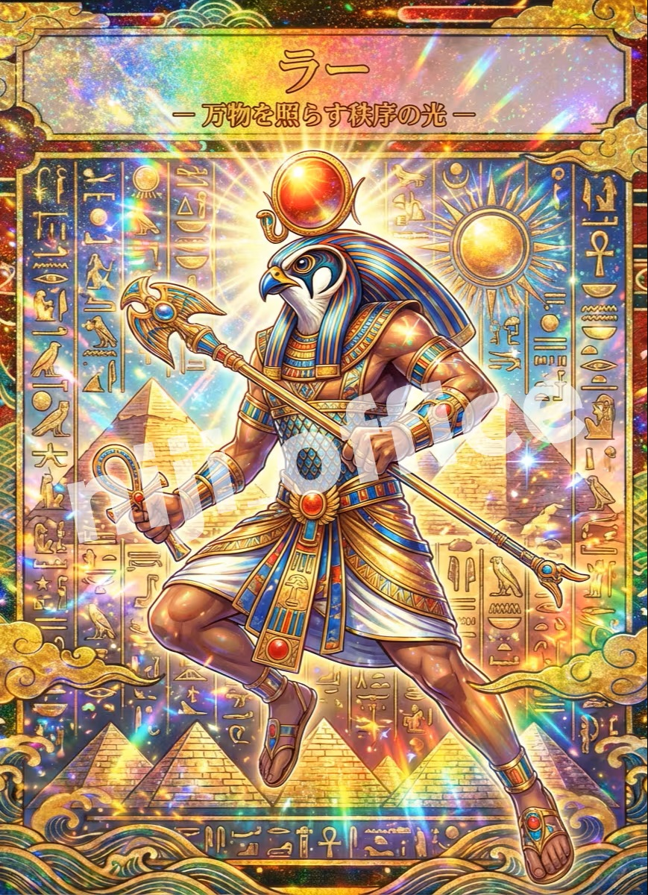
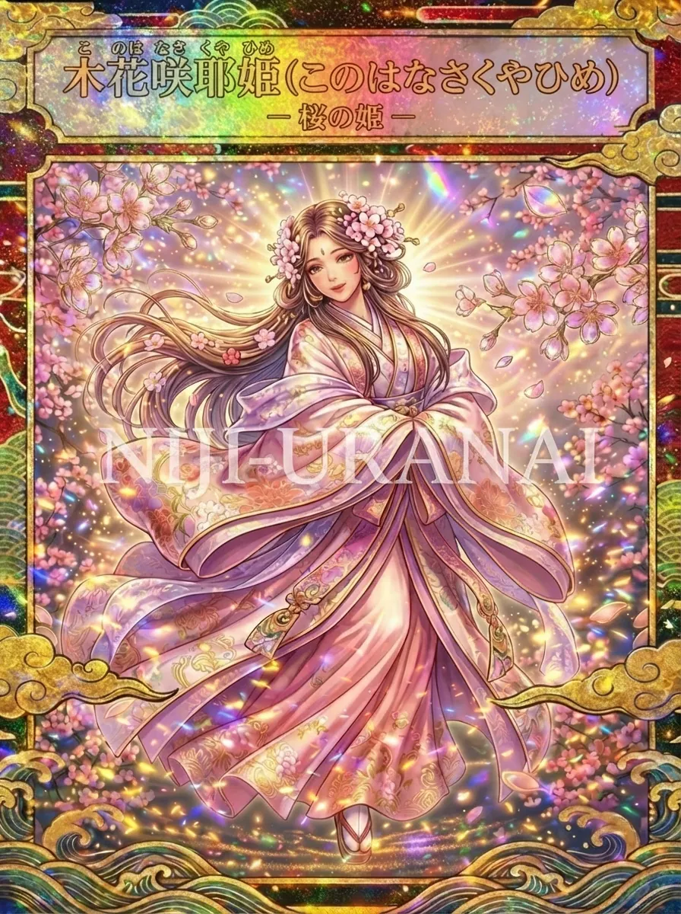
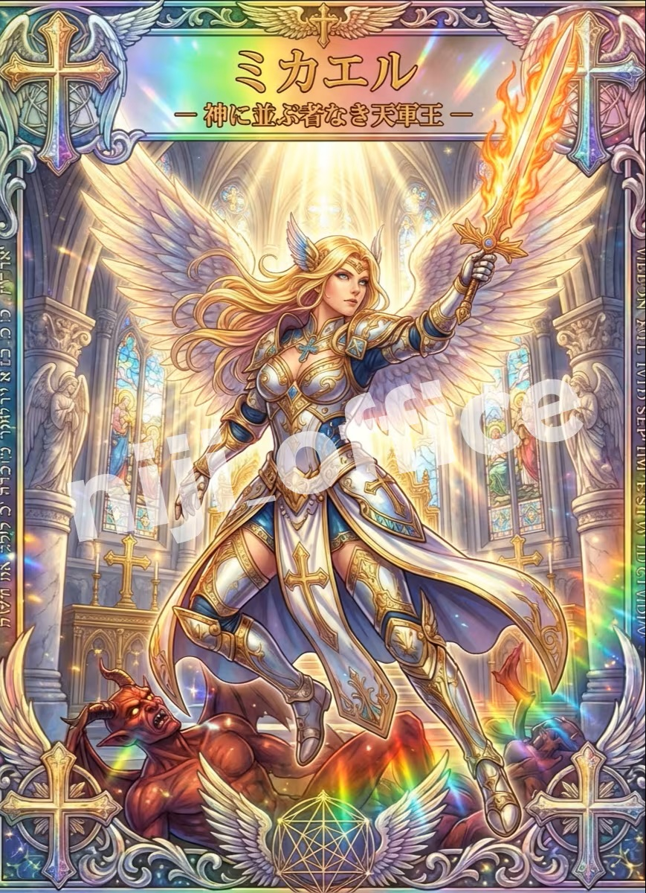
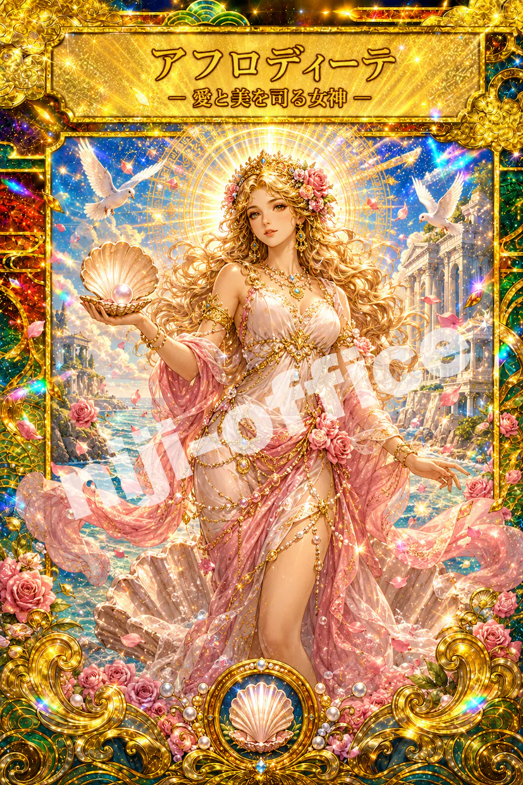

投稿を作るだけで
何時間もかかる
COCONALAプラチナランク達成
FOR FORTUNE TELLERS
あなたの占いを、
「選ばれる発信」に。
集客に迷う時間を減らして、
本業に集中できる。
占い師さんのための集客支援サポート。
購入・お見積り・ご相談は、すべてココナラで安心
NIJI OFFICECREATE YOUR HAPPY BUSINESS
44人 → 4,861人フォロワー成長
249万回テンプレ動画の再生実績
77.1万円実績生の売上事例
9件増個別相談の獲得事例
2026年6月より、2つ目のアカウントも
ココナラ
プラチナランク
達成
1つ目に続き、2つ目のアカウントでもココナラ最高ランクを獲得しました。日々のご依頼と評価を積み重ねながら、安心してご相談いただける出品者として活動しています。購入・相談・決済すべてココナラで完結初めての方も安心してお取引いただけます
STOP DOING IT ALL ALONE
こんなことで、
止まっていませんか？
発信しているのに
申込みにつながらない
世界観が揃わず
素人っぽく見えてしまう
その悩み、実績のある「型」に任せてください。
MUST-HAVE CANVA TEMPLATES
占い師さんの集客に、
この2つは必須です。
Canvaで文字や写真を替えるだけ。デザインが苦手でも、今日から使えます。
01 LANDING PAGE
「あなたにお願いしたい」を作る
縦長LPテンプレ
プロフィールだけでは伝えきれない、想い・鑑定の流れ・選ばれる理由を一枚に。Instagramからココナラへ迷わせず案内する、あなた専用の営業ページです。
- スマホで読みやすい縦長設計
- 文章を替えるだけの完成構成
- ココナラへの購入導線を整理



02 INSTAGRAM REELS
リールテンプレを、
1つずつご紹介。
スクロールして動画が画面に入ると、自動で再生します。気になる見せ方をゆっくり選んでください。
▶タップして音声再生
ORDER MADE
12星座別
ちょこちょこ度
企画・キャラクター・動き・音声まで、世界観に合わせて仕上げたオーダーメイド制作例です。
- ブランド専用の企画設計
- 音声付きで印象に残る構成
- タップして音声再生
REEL 01
あみだくじ
アニメーション
結果へたどり着くまで目が離せない参加型テンプレ。12星座の順位や二択診断など、コメントしたくなる企画にぴったりです。
- 診断・二択・ランキング向け
- 滞在時間とコメントを促進
- 星座やキャラクターを変更可能
REEL 02
12星座
属性分けチャート
「私はどこ？」と自分の星座を探したくなる表形式。性格・恋愛・金運など、あなたの鑑定知識を楽しい分類コンテンツに変えます。
- 12星座の性格分類に最適
- 保存して見返されやすい
- テーマと分類名を編集可能
REEL 03
恋愛 vs 結婚
12星座適性マップ
2軸マップで複雑な傾向を直感的に見せるテンプレ。「恋の主人公」「永遠の伴侶」など、気になる立ち位置を探す楽しさを作ります。
- 恋愛・相性コンテンツ向け
- 一画面で比較しやすい
- 軸・星座・背景を変更可能
REEL 04
下に伸びる
グラフアニメーション
順位が少しずつ現れるため、最後の結果まで自然に視聴される設計。思わせぶり度・金運・モテ度など幅広いテーマに使えます。
- ランキング発表に最適
- 最後まで見たくなる動き
- 項目・色・キャラを変更可能
REEL 05
運命が進む
5ステップチャート
出会い・交際・プロポーズ・準備・入籍まで、ストーリーを順番に見せるテンプレ。恋愛運や未来予測を読み進めたくなる構成です。
- 恋愛・結婚テーマに最適
- 流れを直感的に伝えられる
- 段階・文章・星座を変更可能
REEL 06
紙吹雪が舞う
表彰台ランキング
カーテンが開き、ランキング結果を表彰台で発表。短い尺でも華やかで、トップ3を印象的に見せられます。
- 星座TOP3企画に最適
- 短尺で結果が伝わる
- テーマ・順位・キャラを変更可能
WHY NIJI OFFICE
きれいなだけじゃない。売れる流れまでデザイン。
占い業界に特化
占い師さんのお客様が惹かれる世界観と、購入前に知りたい情報を理解して設計。
数字から逆算
再生・フォロー・相談・売上につながった実例をもとに、反応の取れる型へ。
Canvaで簡単
難しいソフトは不要。スマホでも編集でき、あなたの言葉と写真に置き換え可能。
SERVICE AREAS
占い師さんの集客と鑑定力を、
まとめて育てる支援です。
虹オフィスSol＆Lunaでは、SNS投稿だけで終わらせず、プロフィール・ココナラ商品ページ・購入導線・講座案内まで一つの流れとして整えます。
占い師向けSNS集客支援
Instagramリールや投稿テンプレを使い、見つけてもらう入口を増やします。占い・スピリチュアルの世界観を保ちながら、相談や購入につながる発信へ整えます。
ココナラ導線づくり
実績・鑑定メニュー・お客様の不安解消を整理し、ココナラで相談しやすい導線へ。初めての方にも安心して選ばれる見せ方を作ります。
霊視・魂視メソッド講座
サードアイ講座では、霊視・オーラ・瞑想・魂視メソッドを段階的に学び、鑑定力と言語化を育てます。活動準備やWeb集客もあわせて支援します。
USER COMMENT
実際に使って、
感じていること。
3 EASY STEPS
購入後は、たったの3ステップ。
- 1ココナラで購入
欲しいテンプレを選んでお申込み。
- 2Canvaで編集
文章・色・写真をあなた仕様に。
- 3SNSで公開
プロフィールからココナラへ案内。
ENJOY OUR SPIRITUAL GACHA
お楽しみ霊視ガチャ
売れ筋ランキング
あなたに今ご縁のある存在を霊視で選び、メッセージとデジタルお守り画像でお届け。横にスワイプして選べます。
1

宇宙神ガチャ
宇宙・星・未来に惹かれるあなたへ
ココナラで見る → 2仏さまガチャ
深く穏やかな守りを感じたい方へ
ココナラで見る → 3
守護神ガチャ
ご縁のある八百万の神さまを霊視
ココナラで見る → 4
天使ガチャ
癒やしとやさしい導きが欲しい方へ
ココナラで見る → 5
西欧神ガチャ
愛と美を司る西欧神とのご縁を知りたい方へ
ココナラで見る → NEW金運神相性ガチャ
成功と豊穣を宿す金運神との相性を知りたい方へ
ココナラで見る →← SWIPE →
※霊視ガチャはお楽しみいただくスピリチュアルコンテンツです。効果や結果を保証するものではありません。
ABOUT SOL & LUNA
虹オフィスSol＆Luna
カウンセラー・占い師専門の集客デザイナー。AI×Canvaで「売れる仕組み」を、楽しく・わかりやすくお届けしています。
ココナラ プラチナ占い業界特化Canvaテンプレ
NIJI OFFICE LIBRARY
虹オフィス書庫 代表作
塗り絵・絵本の作品から、4点をご紹介します。YOUR NEXT STEP
次に選ばれる占い師は、
あなたです。
まずは、今の発信に足りない一枚を。
虹オフィスのテンプレが、売れる一歩を軽くします。